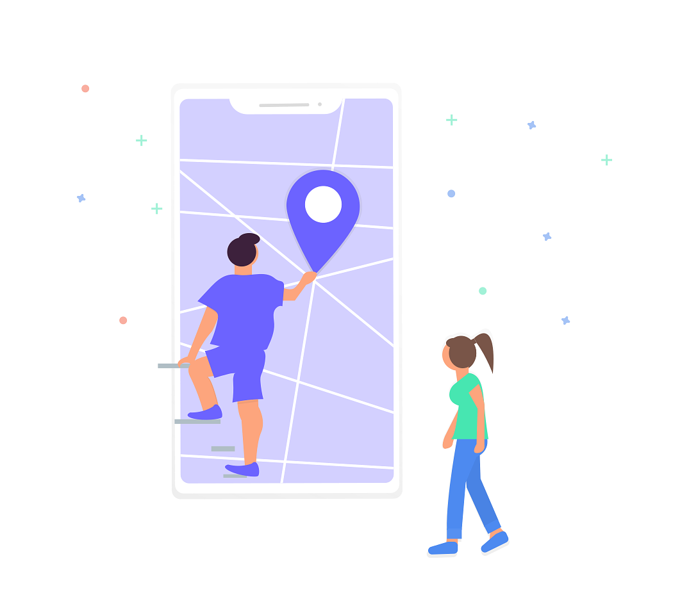

<!--
  Generated template for the CalendarPage page.

  See http://ionicframework.com/docs/components/#navigation for more info on
  Ionic pages and navigation.
-->
<ion-header>
  <ion-navbar>
    <ion-title>Calendar</ion-title>
    <button *ngIf="dateSelected" ion-button style="position: absolute; right: 1em; top: 0.4em;" (click)="onClearDay()">
        <p>See All Events</p>
    </button>
  </ion-navbar>
</ion-header>

<ion-content>
  <div padding>
    <ion-calendar #calendar [events]="currentEvents" (onDaySelect)="onDaySelect($event)" #calendar></ion-calendar>
  </div>

  <ion-scroll scrollY="true" style="height: 47%">

    <ion-grid text-center>

      <div *ngIf="!dispEvents.length">
          <h3>You have no upcoming events! <ion-icon name="sad"></ion-icon></h3>
          
          <h4>Please add them on Primavera.</h4>       
      </div>

      <ion-card style="height: 10em" *ngFor="let event of dispEvents">
        <ion-grid style="height: 100%">
          <ion-row style="height: 100%" align-items-center>
            <ion-col col-2>
              <ion-icon large style="font-size: 30px;" name="time"></ion-icon>
            </ion-col>
            <ion-col>
              <h2 style="text-align: left;font-weight: bold; color: rgb(0, 204, 126);">{{event.title}}</h2>
              <h2 style="text-align: left;color: #666;">{{event.start}}</h2>
            </ion-col>
          </ion-row>
          <ion-row style="height: 100%" align-items-center>
            <ion-col col-2>
              <ion-icon large style="font-size: 30px;" name="contact"></ion-icon>
            </ion-col>
            <ion-col>
              <h2 style="text-align: left">Meet {{event.client}}</h2>
              <p style="text-align: left;color: #666;">{{event.location}}</p>
            </ion-col>
            <ion-col col-4>
              <button ion-button (click)="openMap(event.location);">
                Open Map
              </button>
            </ion-col>
          </ion-row>
        </ion-grid>
      </ion-card>
    </ion-grid>
  </ion-scroll>

</ion-content>

<nav-tabs></nav-tabs>